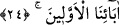

“Andolsun ki, Nuh’u kavmine gönderdik.” Kıssaya yemin ile başlanması, kıssanın
muhtevâsına çok önem verildiğini ortaya koymak içindir. Yâni, Allah’a yemin olsun ki
Nuh’u kavmine gönderdik, demektir.
Cemaleddîn’in kasîdesinde şöyle der:
Günahların çokluğundan ağlayıp inlediler
Peygamberler içinde Nuh gibi dövündüler
O, uzun bir ömür sürdü
Az bir sözden dolayı ağlayıp inledi
Çünkü Nuh (a.s.) bir gün uyuz bir köpeğin yanından geçti. “Bu ne kötü bir köpek!”
dedi. Sonra da söylediğine pişman oldu. Ömrünün başından sonuna kadar ağladı.
“Ve o:” Nuh (a.s.) onları tevhîde dâvet ederek: “Ey kavmim!” sâdece “Allah’a kulluk
edin. Sizin için O’ndan başka bir ilah yoktur.” Yâni varlıkta veya âlemde sizin için
Allah’tan başta bir ilah yoktur.
“Hâlâ sakınmaz mısınız?” dedi.” Bu soru, mevcud durumu reddetmek ve çirkin
görmek içindir. Yâni siz “Sizin için O’ndan başka bir ilah yoktur” sözünün
muhtevâsını bilmez misiniz? İbâdeti hak etmesi bir yana, Allah var etmese var olmayı
bile hak etmeyen şeyleri ibâdette Allah’a ortak koşmanız sebebiyle O’nun azâbından
sakınmaz mısınız?
Burada reddedilen ve yadırganan, sakınmayı gerektiren şeyler kesin olarak ortada
olduğu halde sakınmamaktır.
Kâşifî der ki. “O’nun azabından korkunuz ve O’nun dışındakilere ibadet etmeye,
kulluk yapmaya meyletmeyiniz.”
et-Te’vîlâtü’n-Necmiyye’de der ki: “Andolsun ki, Nuh’u kavmine” Nuh rûhunu kavmi
olan kalb, sır, nefis, kalıb ve azalara “gönderdik ve o: “Ey kavmim! Allah’a kulluk
edin. Sizin için O’ndan başka” hevâ ve şeytan gibi “bir ilah yoktur.” Kalbin ibâdeti
(Allah’tan başka şeylere olan) ilgileri kesmekle ve muhabbetle, sırrın ibâdeti tevhid ile
hemhâl olmakla (teferrüd), nefsin ibâdeti ahlâkı değiştirmekle, kalıbın ibâdeti tecrîd ile
ve organların ibâdeti şerîatın rükünlerini ayakta tutmakladır. Siz bu ibâdetlerle mahrum
kalmaktan, yardımsız bırakılmaktan ve ateş azâbından “hâlâ sakınmaz mısınız?” dedi.”
24. Bunun üzerine, kavminin inkarcı ileri gelenleri şöyle dediler: “Bu, sadece